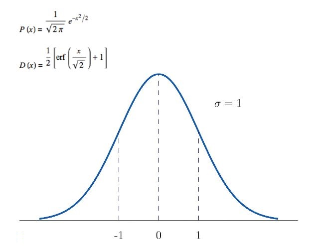

SVD
Visualization
To understand what is happening when we do SVD, let us take 100 random points that lie on a circle and see what happens when we apply each decomposition to these set of points.For the given matrix on applying SVD we get where is mXm matrix , is mXn diagonal matrix and is nxn matrix.
On taking the 100 generated points as a matrix of x and y coordinates (say matrix M), and then multiplying with U we find that the dataset gets rotated (the shape of the circle remains same) which can be seen in brown, then multiplying with S scales the circle (seen in green) and then finally multiplying with rotates the figure again (seen in red). So SVD rotates, scales and then rotates the figure hence changing the circle to look like ellipse.
Normal Distribution
For the set of data points, we have taken a standard normal distribution with mean as 0 and covariance matrix represented by [1 0 ; 0 1] which gives us points spread out from the origin upto a radius of one.
A standard normal distribution is a normal distribution with zero mean and unit variance , given by the probability density function and distribution function

When the first matrix in the SVD (V') is applied to the data, this serves to rotate the data in three-space so that the data is represented relative to the V-basis.
The second step in the SVD is to multiply our rotated data by the 'singular matrix' S, which is mxn.Generally, multiplying a vector by a diagonal matrix with r nonzero elements on the diagonal simply yields . That is, it stretches or contracts the components of v by the magnitude of the the singular values and zeroes out those elements of x that correspond to the zeros on the diagonal.
The third step,matrix to the transformed data represented in the -basis. Just like , is a rotation matrix: it transforms the data back to the standard basis.
Finally finding the covariance matrix, for this new distribution, we obtain the same input matrix used above because matrix multiplication is happening with Identity matrix.
Eigen Vectors
Given a Matrice A with eigen vectors v1,v2 corresponding to eigen values λ1 and λ2 repectively.Then we know that
Av=λv
where v ε { v1, v2} using the above result we can conclude that
⇒ A2v=λ2v
⇒ AAv=Aλv
⇒ AAv=λAv
⇒ A2v=λλv
⇒ A2v=λ2v
Anv=λnv
The graph plotted represents the various vectors obtained on multiplying the eigen vectors of matrice A with the powers of A. We observe the following cases :
1) if |λ| < 1 and λ > 0 The eigen vector of the matrice A keeps on shrinking as the value of n increases.
2) if |λ| <1 and λ >0 The eigen vector of the matrice A keeps on shrinking as the value of n increases and also for even value of n it keeps flipping its direction by 180°.
3) if |λ| >1 and λ<0 The eigen vector of the matrice A keeps on elongating as the value of n increases and also for even value of n it keeps flipping its direction by 180°.
4) if |λ| >1 and λ >0 The eigen vector of the matrice A keeps on elongating as the value of n increases .